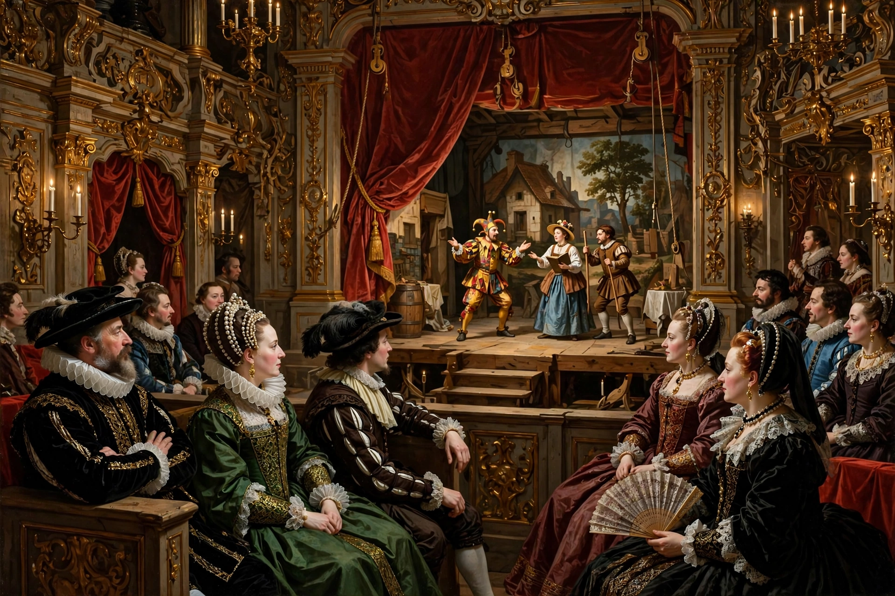

A play within a play is a dramatic device in which the characters of a play perform a second play for the audience within the main work. The device creates a form of metatheatre, allowing the outer play to comment on theatre itself, hold a mirror up to its characters, or advance the plot through the reactions of the inner audience.

The best-known example is "The Mousetrap" in Shakespeare's Hamlet, in which Prince Hamlet stages The Murder of Gonzago to test King Claudius's guilt — "the play's the thing wherein I'll catch the conscience of the king". Shakespeare used the device again with the mechanicals' performance of Pyramus and Thisbe in A Midsummer Night's Dream, and in The Taming of the Shrew, framed by the Christopher Sly Induction.
Thomas Kyd's The Spanish Tragedy (c. 1587) climaxes with a playlet in which fictional deaths become real ones. Later variants include the rehearsal plays of Luigi Pirandello's Six Characters in Search of an Author, the musical Kiss Me, Kate (actors performing The Taming of the Shrew), Michael Frayn's farce Noises Off, and The Play That Goes Wrong. Analogous devices in other media include the film within a film and the story within a story.
Inner plays can provide dramatic irony, comic counterpoint, exposition, or a "mirror scene" in which the inner action reflects the outer plot. Because the audience watches an audience, the device also invites reflection on spectatorship and illusion.
See also: Story within a story · Metafiction · Hamlet